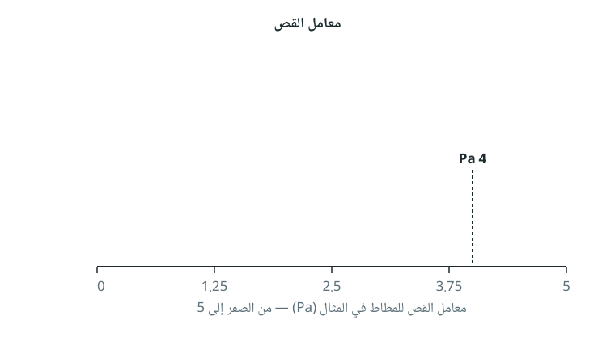

معامل القص
Shear modulus
معامل القص يقيس مقاومة مادة للتشوه الزاوي عند تعرضها لإجهاد قص: G = τ/γ. يظهر في التواء الأعمدة وفي قص الصفائح، ويحدد مع معامل يونغ ومعامل بواسون العلاقة بين الإجهادات في المواد المطيلة.
حين تُسلَّط قوة مماسية على سطح جسم مثبَّت من قاعدته، ينزلق السطح العلوي أفقياً بمقدار يتناسب مع ارتفاع الجسم. النسبة بين الإزاحة والارتفاع هي انفعال القص γ، والنسبة بين القوة المماسية والمساحة هي إجهاد القص τ. ومعامل القص هو نسبتهما: G = τ/γ. مثال: كتلة مطاطية ارتفاعها 0.100 m ومساحة سطحها 0.0200 m²، أُزيحت سطحها العلوي 0.005 00 m بقوة مماسية 40.0 N: τ = 40.0/0.0200 = 2000 Pa، وγ = 0.005 00/0.100 = 0.0500، فيكون G = 2000/0.0500 = 4.00×10⁴ Pa.
كيف تعمل الظاهرة؟
إجهاد القص يزيح طبقات المادة بعضها فوق بعض بلا تغيير في الحجم. وفي المواد الصلبة تقاوم الشبكة البلورية هذا الانزلاق بقوى بين الذرات، فتنشأ زاوية صغيرة ثابتة النسبة مع الإجهاد. وفي المعادن يحدث الانزلاق بانزلاق العيوب البلورية (الانخلاعات) عبر المستويات، ولهذا يكون معامل القص أقل بكثير من المعامل النظري للمادة الكاملة. وفي المطاط يحدث التشوه بفكّ التعرج الجزيئي، فيكون المعامل صغيراً جداً ويعتمد على الحرارة.
العلاقة بالأرقام
G = τ/γ، وعلاقته بمعامل يونغ E ومعامل بواسون ν: G = E/(2(1+ν)). مثال: فولاذ E = 200 GPa وν = 0.30 → G = 200/(2×1.30) = 76.9 GPa، وهو قريب من المقيس 79 GPa. وللمطاط E = 0.0100 GPa وν = 0.499 → G = 0.0100/(2×1.499) = 3.34 MPa، وهو في رتبة القيمة المقيسة.
مفاهيم متقاربة
يُفرَّق بين معامل القص ومعامل يونغ: الأول يربط إجهاد القص بانفعاله، والثاني يربط الإجهاد الشدي بالانفعال الطولي. ويُفرَّق بين القص النقي والقص البسيط: الأول يحافظ على الحجم بلا دوران، والثاني يشمل دوراناً. ويُفرَّق بين معامل القص ومعامل المرونة الحجمي: الثاني للضغط المنتظم. وأخيراً يُفرَّق بين مقاومة القص ومقاومة الخضوع: الأولى معامل مرن، والثانية حدّ الإجهاد الذي يبدأ عنده التشوه الدائم.
حدود التطبيق
المعامل صالح في النطاق المرن فقط، فإذا تجاوز إجهاد القص حدّ الخضوع تشوّهت المادة تشوهاً دائماً ولم تعد العلاقة خطية. ولا يصف المواد الهشة التي تتشقق قبل أن تنزلق، كالزجاج. ولا يصف المواد اللزوجة التي يعتمد تشوهها على الزمن. ولا يُستعمل في التصميم الزلزالي دون معامل القص الديناميكي، لأن التحميل السريع يرفع المعامل الفعلي.

| الكمية | القيمة | المصدر |
|---|---|---|
| معامل القص للمطاط في المثال | 4.00×10⁴ Pa | [1] |
| زاوية التواء العمود الفولاذي | 1.18 ° | [1] |
المصادر
- 1 CODATA Value: molar gas constant — NIST — CODATA 2022 recommended values (2024). physics.nist.gov/cgi-bin/cuu/Value?r · اطُّلع عليه 2026-11-22
- 2 The International System of Units (SI), 9th edition (2019) — BIPM — Bureau International des Poids et Mesures (2019). www.bipm.org/en/publications/si-brochure · اطُّلع عليه 2026-11-22
- 3 The International System of Units (SI), 9th edition (2019) — BIPM — Bureau International des Poids et Mesures (2019). www.bipm.org/en/publications/si-brochure · اطُّلع عليه 2026-11-22
استشهد بهذا المصطلح
الصيغتان مبنيتان من بيانات الصفحة نفسها: العنوان والتاريخ ورابط النسخة المنشورة.
معامل القص — Shear modulus. (2026). ديوان المعرفة — انفراد. https://infiradev.com/diwan/terms/term-shear-modulus.html
@misc{term-shear-modulus2026,
title = {معامل القص},
titleaddon = {Shear modulus},
howpublished = {{ديوان المعرفة — انفراد} — مرجع علمي عربي},
year = {2026},
url = {https://infiradev.com/diwan/terms/term-shear-modulus.html},
urldate = {2026-11-26},
note = {مراجعة علمية: hermes (مراجعة معتمدة 2026-11-26)}
}
راجعه: hermes (مراجعة معتمدة 2026-11-26) · 2026-11-26 · آخر تحديث 2026-11-22